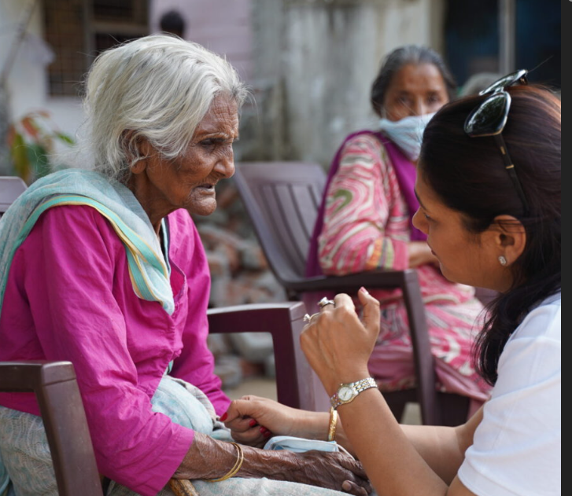

Vridha Seva Foundation is a non-profit organization dedicated to the care and well-being of elderly people who are abandoned, neglected, or in need of support. We work to provide shelter, nutritious food, healthcare, and emotional care to senior citizens so they can live their lives with dignity and respect.

Our foundation believes that old age should be a time of care, safety, and peace — not loneliness or suffering. Through community support and compassionate service, we strive to stand beside elders who have no one to rely on.